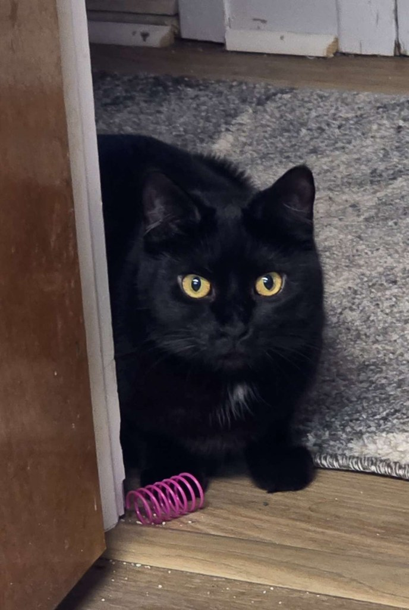
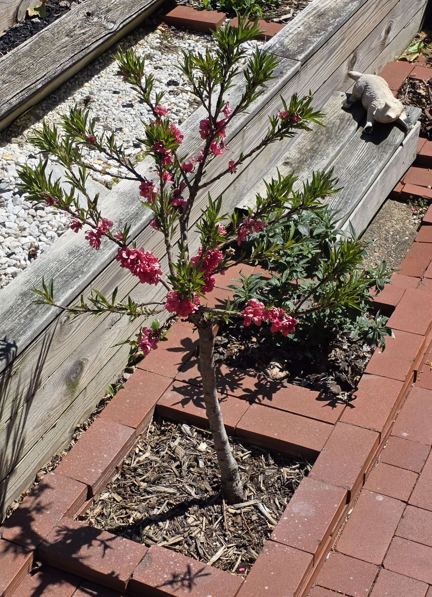
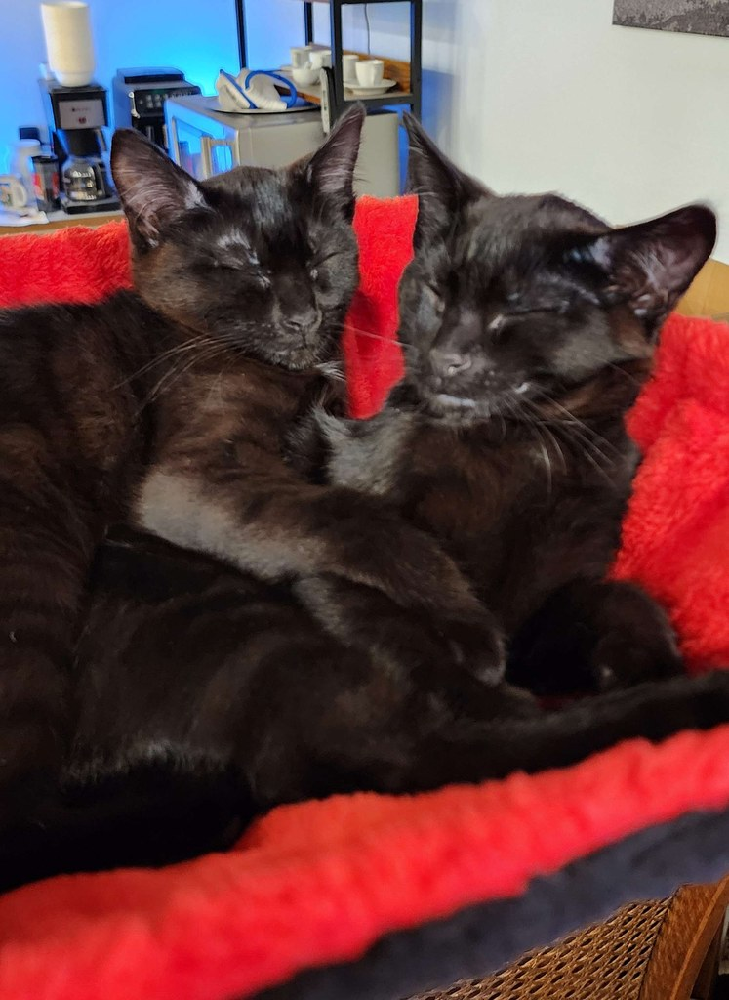

Collections
Photos, kept casual.
Cats, the garden, and the occasional restoration. The polished chronicle lives in Plant Progress — this is the looser feed.




Sections
Pick a corner
The good photos earn stronger writing. The rest stay a feed.